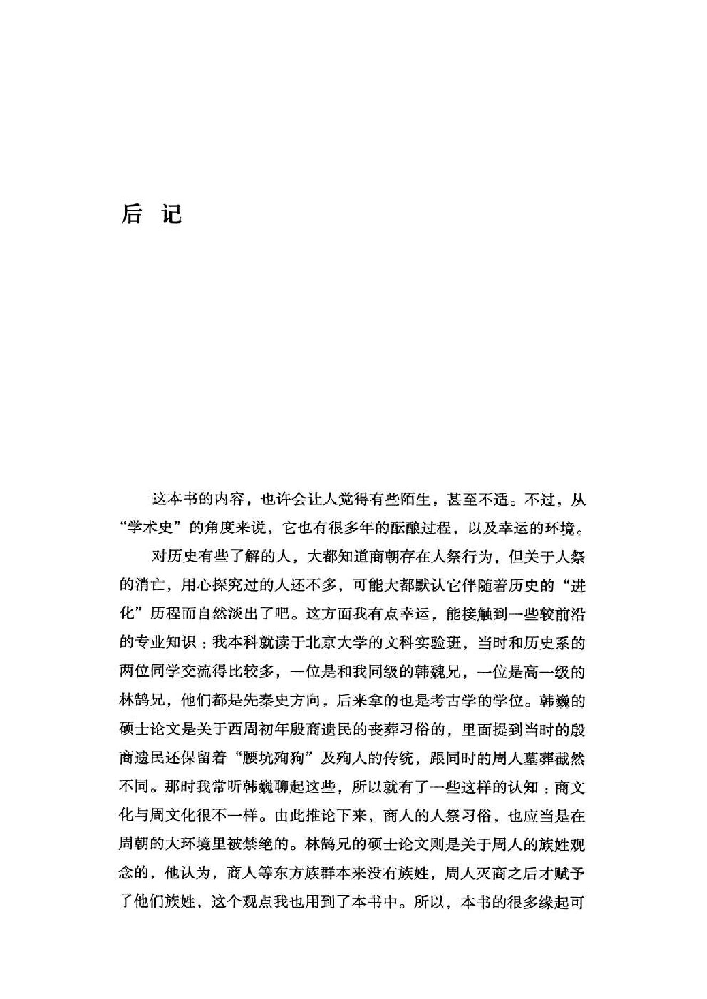
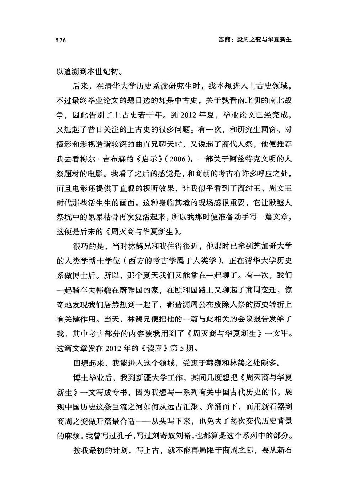
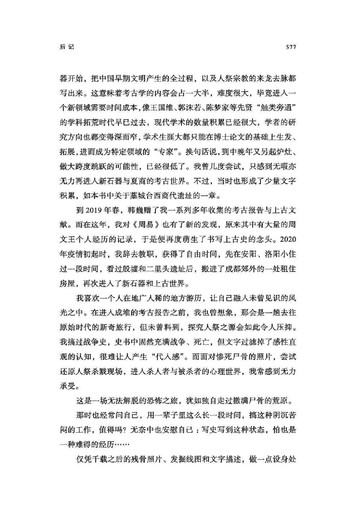
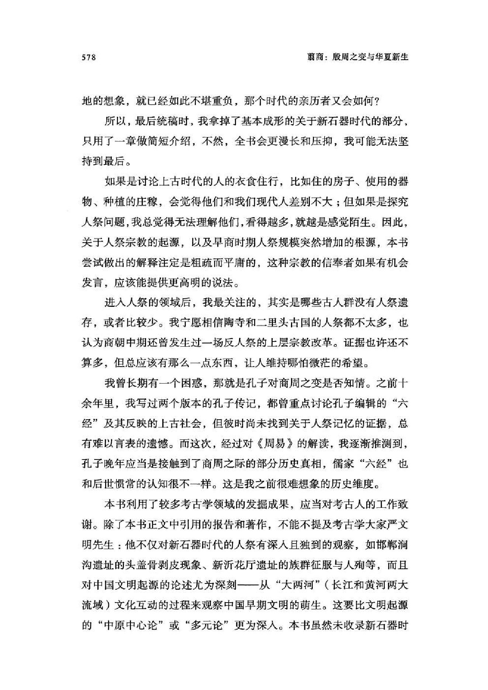
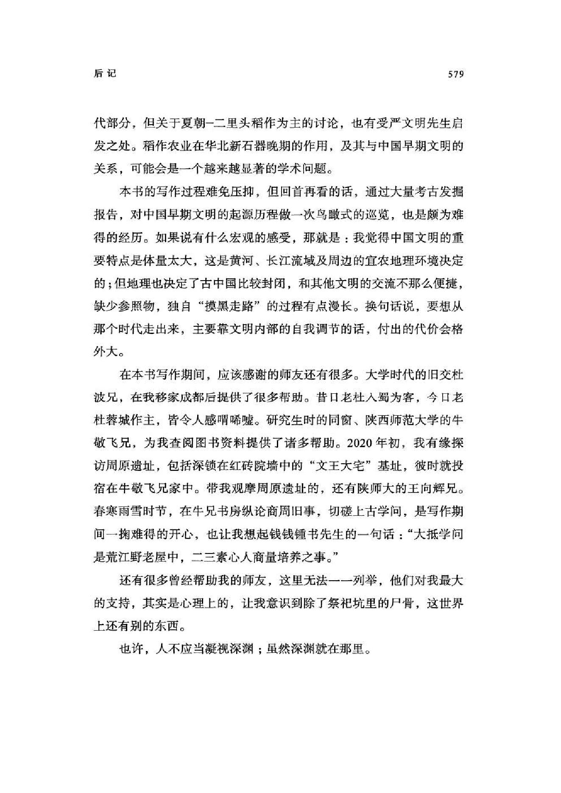

阅读词表
| 词条 | 拼音 | 类型 | 说明 |
|---|---|---|---|
| 人祭 | rén jì | concept | 杀人用于祭祀的宗教行为。 |
| 林鹄 | lín hú | person | 研究周人族姓观念等问题的学者。 |
| 韩巍 | hán wēi | person | 研究西周殷商遗民丧葬习俗的学者。 |
| 严文明 | yán wén míng | person | 中国考古学家。 |
| 周原 | zhōu yuán | site_or_culture | 关中地区周族的重要活动中心。 |
| 考古报告 | kǎo gǔ bào gào | text | 记录考古调查、发掘和研究成果的专业报告。 |
| 周易 | zhōu yì | text | 以《易经》及其传文构成的古代经典。 |
| 殷商遗民 | yīn shāng yí mín | concept | 商朝灭亡后延续生活的商人群体。 |
| 阿兹特克 | ā zī tè kè | site_or_culture | 古代中部美洲文明。 |
| 藁城台西 | gǎo chéng tái xī | site_or_culture | 河北藁城商代遗址。 |
| 文王大宅 | wén wáng dà zhái | site_or_culture | 周原遗址中的大型西周建筑基址。 |
| 腰坑殉狗 | yāo kēng xùn gǒu | concept | 在墓穴腰坑中埋狗的丧葬习俗。 |
| 人殉 | rén xùn | concept | 以人为死者殉葬。 |
| 祭祀坑 | jì sì kēng | concept | 用于举行祭祀或埋入祭品的坑穴。 |
| 凝视深渊 | níng shì shēn yuān | concept | 后记中形容长期面对人祭历史所带来的精神压力。 |
| 宗教改革 | zōng jiào gǎi gé | 项目词典 | 文中指试图以埋藏器物替代杀人杀牲的祭祀变革。 |
| 长江流域 | cháng jiāng liú yù | 项目词典 | 长江水系覆盖的广大地区。 |
| 周文王 | zhōu wén wáng | 项目词典 | 周族领袖姬昌。 |
| 头盖骨 | tóu gài gǔ | 项目词典 | 颅骨顶部，文中涉及加工成碗状器物。 |
| 王国维 | wáng guó wéi | 项目词典 | 现代学者，文中引用《说珏朋》。 |
| 郭沫若 | guō mò ruò | 项目词典 | 现代学者，文中涉及其对后冈H10的判断。 |
| 儒家 | rú jiā | 项目词典 | 以孔子思想及相关经典传统为核心的学派。 |
| 六经 | liù jīng | 项目词典 | 传统所称《诗》《书》《礼》《乐》《易》《春秋》。 |
| 台西 | tái xī | 项目词典 | 河北藁城商代遗址，文中作为商朝北方军事聚落。 |
| 周公 | zhōu gōng | 项目词典 | 周公旦，武王之弟。 | 周公旦，周初政治家。 |
| 基址 | jī zhǐ | 项目词典 | 建筑物遗留下来的基础位置。 |
| 孔子 | kǒng zǐ | 项目词典 | 春秋时期思想家、教育家，儒家学派的重要奠基者。 |
| 殉人 | xùn rén | 项目词典 | 陪葬或随葬的人。 |
| 殷商 | yīn shāng | 项目词典 | 商朝后期文化和政权。 | 商代后期以殷墟为中心的商王朝阶段。 |
| 殷墟 | yīn xū | 项目词典 | 晚商都邑遗址，甲骨卜辞的重要出土地。 | 商代晚期都城遗址。 |
| 纣王 | zhòu wáng | 项目词典 | 商朝末代王帝辛。 | 商末王，文中讨论其暴虐和人祭。 |
| 藁城 | gǎo chéng | 项目词典 | 今河北石家庄藁城区，台西遗址所在地。 |
| 遗存 | yí cún | 项目词典 | 古代活动留下的遗物、遗迹或现象。 |
| 陶寺 | táo sì | 项目词典 | 山西襄汾一带龙山时代重要遗址。 |
青铜器词表
| 器名 | 拼音 | 类型 | 说明 |
|---|---|---|---|
| 暂无青铜器词表 | |||
章节导读札记
| 主题 | 札记 | 操作 |
|---|---|---|
| 暂无章节导读札记 | ||
用户札记
| 类型 | 页 | 内容 |
|---|---|---|
| 暂无用户札记 | ||
原书阅读器页 589原书物理 PDF 页 587印刷页 575
后记
这本书的内容，也许会让人觉得有些陌生，甚至不适。不过，从“学术史”的角度来说，它也有很多年的酝酿过程，以及幸运的环境。
对历史有些了解的人，大都知道商朝存在人祭行为，但关于人祭的消亡，用心探究过的人还不多，可能大都默认它伴随着历史的“进化”历程而自然淡出了吧。这方面我有点幸运，能接触到一些较前沿的专业知识：我本科就读于北京大学的文科实验班，当时和历史系的两位同学交流得比较多，一位是和我同级的韩魏兄，一位是高一级的林鹄兄，他们都是先秦史方向，后来拿的也是考古学的学位。韩巍的硕士论文是关于西周初年殷商遗民的丧葬习俗的，里面提到当时的殷商遗民还保留着“腰坑殉狗”及殉人的传统，跟同时的周人墓葬截然不同。那时我常听韩巍聊起这些，所以就有了一些这样的认知：商文化与周文化很不一样。由此推论下来，商人的人祭习俗，也应当是在周朝的大环境里被禁绝的。林鹄兄的硕士论文则是关于周人的族姓观念的，他认为，商人等东方族群本来没有族姓，周人灭商之后才赋予了他们族姓，这个观点我也用到了本书中。所以，本书的很多缘起可以追溯到本世纪初。
后来，在清华大学历史系读研究生时，我本想进入上古史领域，不过最终毕业论文的题目选的却是中古史，关于魏晋南北朝的南北战争，因此告别了上古史若干年。到2012年夏，毕业论文已经完成，又想起了昔日关注的上古史的很多问题。有一次，和研究生同窗、对摄影和影视造诣较深的曲直兄聊天时，又说起了商代人祭，他便推荐我去看梅尔•吉布森的《启示》（2006），一部关于阿兹特克文明的人祭题材的电影。我看了之后的感觉是，和商朝的考古有许多呼应之处，而且电影还提供了直观的视听效果，让我似乎看到了商纣王、周文王时代那些活生生的画面。这种身临其境的现场感很重要，它让殷墟人祭坑中的累累枯骨再次复活起来，所以我那时便准备动手写一篇文章，这便是后来的《周灭商与华夏新生》。[[editor-fn:1]]
〔编者注1〕启示的剧情简介 · · · · · ·
玛雅文明末期，奢华淫靡之气蔓延，为了祭奠那些刚刚落成的金字塔以及驱散众神的愤怒，玛雅王国派出强悍的军队入侵丛林深处的弱小部落，将战俘作为祭天的牺牲斩杀。
年轻骁勇的战士虎爪（Rudy Youngblood 饰）和族人过着平静的生活，他有可爱的儿子和美丽的妻子，并且不久将迎来新的生命。但玛雅军队打破了这一切，他的部落遭到袭击，虎爪及时将妻儿藏在深坑之中，自己却不慎被俘。
经过一路坎坷，他和其他战俘来到玛雅城。无数头颅被可耻的刽子手斩落，但即便在这个时刻，虎爪也念念不忘丛林深处的妻儿。只要一息尚存，他无论如何也要回到妻儿的身边……

原书阅读器页 590原书物理 PDF 页 588印刷页 576
很巧的是，当时林鹄兄和我住得很近，他那时已拿到芝加哥大学的人类学博士学位（西方的考古学属于人类学），正在清华大学历史系做博士后。所以，那个夏天我们又能常在一起聊了。有一次，我们一起骑车去韩巍在蔚秀园的家，在颐和园路上又聊起了商周变迁，惊奇地发现我们居然想到一起了，都猜测周公在废除人祭的历史转折上有关键作用。当天，林鹄兄便把他的一篇与此相关的会议报告发给了我，其中考古部分的内容被我用到了《周灭商与华夏新生》一文中。这篇文章发在2012年的《读库》第5期。
回想起来，我能进入这个领域，受惠于韩巍和林鹄之处颇多。
博士毕业后，我到新疆大学工作，其间几度想把《周灭商与华夏新生》一文写成专书，因为我想写一系列有关中国古代历史的书，展现中国历史这条巨流之河如何从远古汇聚、奔涌而下，而用新石器到商周之变做开篇最合适——从头写下来，也免去了每次交代历史背景的麻烦。我曾写过孔子，写过刘寄奴刘裕，也都算是这个系列中的部分。
按我最初的计划，写上古，就不能再局限于商周之际，要从新石器开始，把中国早期文明产生的全过程，以及人祭宗教的来龙去脉都写出来。这意味着考古学的内容会占一大半，难度很大，毕竟进入一个新领域需要时间成本，像王国维、郭沫若、陈梦家等先贤“触类旁通”的学科拓荒时代早已过去，现代学术的数量积累已经很大，学者的研究方向也都变得深而窄，学术生涯大都只能在博士论文的基础上生发、拓展，进而成为特定领域的“专家”。换句话说，到中晚年又另起炉灶、做大跨度跳跃的可能性，已经很低了。我曾几度尝试，只感到无暇亦无力再进入新石器与夏商的考古世界。不过，当时也形成了少量文字积累，如本书中关于藁城台西商代遗址的一章。

原书阅读器页 591原书物理 PDF 页 589印刷页 577
到2019年春，韩巍赠了我一系列多年收集的考古报告与上古文献。而在这年，我对《周易》也有了新的发现，原来其中有大量的周文王个人经历的记录，于是便再度萌生了书写上古史的念头。2020年疫情初起时，我辞去教职，获得了自由时间，先在安阳、洛阳小住过一段时间，看过殷墟和二里头遗址后，搬进了成都郊外的一处租住房屋，再次进入了新石器和上古世界。
我喜欢一个人在地广人稀的地方游历，让自己融入未曾见识的风光之中。在进入成堆的考古报告之前，我也曾想象，那会是一趟去往原始时代的新奇旅行，但未曾料到，探究人祭之源会如此令人压抑。我搞过战争史，史书中固然充满战争、死亡，但文字过滤掉了感性直观的认知，很难让人产生“代人感”。而面对惨死尸骨的照片，尝试还原人祭杀戮现场，进入杀人者与被杀者的心理世界，我常感到无力承受。
这是一场无法解脱的恐怖之旅，犹如独自走过撒满尸骨的荒原。
那时也经常问自己，用一辈子里这么长一段时间，搞这种阴沉苦闷的工作，值得吗？无奈中也安慰自己：写史写到这种状态，怕也是一种难得的经历……
仅凭千载之后的残骨照片、发掘线图和文字描述，做一点设身处地的想象，就已经如此不堪重负，那个时代的亲历者又会如何？
所以，最后统稿时，我拿掉了基本成形的关于新石器时代的部分，只用了一章做简短介绍，不然，全书会更漫长和压抑，我可能无法坚持到最后。
如果是讨论上古时代的人的衣食住行，比如住的房子、使用的器物、种植的庄稼，会觉得他们和我们现代人差别不大；但如果是探究人祭问题，我总觉得无法理解他们，看得越多，就越是感觉陌生。因此，关于人祭宗教的起源，以及早商时期人祭规模突然增加的根源，本书尝试做出的解释注定是粗疏而平庸的，这种宗教的信奉者如果有机会发言，应该能提供更高明的说法。

原书阅读器页 592原书物理 PDF 页 590印刷页 578
进入人祭的领域后，我最关注的，其实是哪些古人群没有人祭遗存，或者比较少。我宁愿相信陶寺和二里头古国的人祭都不太多，也认为商朝中期还曾发生过一场反人祭的上层宗教改革。证据也许还不算多，但总应该有那么一点东西，让人维持哪怕微茫的希望。
我曾长期有一个困惑，那就是孔子对商周之变是否知情。之前十余年里，我写过两个版本的孔子传记，都曾重点讨论孔子编辑的“六经”及其反映的上古社会，但彼时尚未找到关于人祭记忆的证据，总有难以言表的遗憾。而这次，经过对《周易》的解读，我逐渐推测到，孔子晚年应当是接触到了商周之际的部分历史真相，儒家“六经”也和后世惯常的认知很不一样。这是我之前很难想象的历史维度。
本书利用了较多考古学领域的发掘成果，应当对考古人的工作致谢。除了本书正文中引用的报告和著作，不能不提及考古学大家严文明先生：他不仅对新石器时代的人祭有深入且独到的观察，如邯郸涧沟遗址的头盖骨剥皮现象、新沂花厅遗址的族群征服与人殉等，而且对中国文明起源的论述尤为深刻一一从“大两河”（长江和黄河两大流域）文化互动的过程来观察中国早期文明的萌生。这要比文明起源的“中原中心论”或“多元论”更为深入。本书虽然未收录新石器时代部分，但关于夏朝一二里头稻作为主的讨论，也有受严文明先生启发之处。稻作农业在华北新石器晚期的作用，及其与中国早期文明的关系，可能会是一个越来越显著的学术问题。
本书的写作过程难免压抑，但回首再看的话，通过大量考古发掘报告，对中国早期文明的起源历程做一次鸟瞰式的巡览，也是颇为难得的经历。如果说有什么宏观的感受，那就是：我觉得中国文明的重要特点是体量太大，这是黄河、长江流域及周边的宜农地理环境决定的；但地理也决定了古中国比较封闭，和其他文明的交流不那么便捷，缺少参照物，独自“摸黑走路”的过程有点漫长。换句话说，要想从那个时代走出来，主要靠文明内部的自我调节的话，付出的代价会格外大。

原书阅读器页 593原书物理 PDF 页 591印刷页 579
在本书写作期间，应该感谢的师友还有很多。大学时代的旧交杜波兄，在我移家成都后提供了很多帮助。昔日老杜入蜀为客，今日老杜蓉城作主，皆令人感喟唏嘘。研究生时的同窗、陕西师范大学的牛敬飞兄，为我查阅图书资料提供了诸多帮助。2020年初，我有缘探访周原遗址，包括深锁在红砖院墙中的“文王大宅”基址，彼时就投宿在牛敬飞兄家中。带我观摩周原遗址的，还有陕师大的王向辉兄。春寒雨雪时节，在牛兄书房纵论商周旧事，切磋上古学问，是写作期间一掬难得的开心，也让我想起钱锺书[[editor-fn:2]]先生的一句话：“大抵学问是荒江野老屋中，二三素心人商量培养之事。”
还有很多曾经帮助我的师友，这里无法一一列举，他们对我最大的支持，其实是心理上的，让我意识到除了祭祀坑里的尸骨，这世界上还有别的东西。
也许，人不应当凝视深渊；虽然深渊就在那里。
〔按语：察见渊鱼者不祥[[editor-fn:3]]〕
〔编者注2〕此处原版勘误
〔编者注3〕该语出自《列子·说符》：“周谚有言：‘察见渊鱼者不祥，智料隐匿者有殃。’” 亦见于《韩非子·说林》与《史记·吴王濞列传》。现代·鲁迅·《两地书·致许广平八》：由此可知见事太明，做事即失其勇，庄子（按当为列子）所谓“察见渊鱼者不祥”，盖不独谓将为众所忌，且与自己的前进亦复大有妨碍也。

编辑札记
标记
先在正文中选择文字，再输入拼音；可用“拼音；简注”。